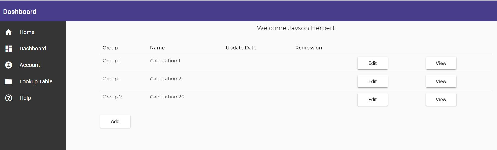
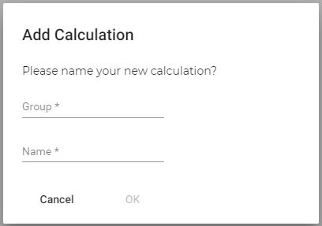

This page is to assist the user with the Calc-Steps website. The Calc-Steps website allows a user to build a calculation of their requirements that can be used at any time online. The user builds their own calculations which with using Release/User Management can be shared with other users to use a Released version of the calculation that doesn't have any configuration available to edit. This Release is auditable and has the ability to be rolled back.
Calc-Steps also allows the user to Test their own calculations and gives a Test-Management harness in order to manage any changes in the calculation to ensure that no defects are introduced.
On successful sign in or log in to the website the user will be presented with the dashboard below of their Calculations. These calculations will be owned by the logged in user and can be configured only by them
In order to get started the user must click the Add button, this will then show a popup box to input the Group and Name of the calculation. This will then add this to the list of calculations you own.
In order to view the Released calculation that other users can access, once the configured calculation has been released then please click the View Calculation.
In order to build or update a calculation click the Edit Calculation button on the relevant calculation to gain access to the Calculation Configuration screen for the Calculation.
In order to view the Released calculation that other users can access, once the configured calculation has been released then please click the View Calculation.
Please see below where to access all arears of the website.
This is available on the calculation clicked from the Dashboard and the Edit Calculation button.
This is available within the Calculation Configuration screen and on each row of the Calculation Configuration section of that screen the relevant function to use will be displayed.
This is available from the Dashboard sidebar, click Lookup Table
This is available from within Calculation Configuration on each calculation, please see the sidebar in the Calculation Configuration builder
This is available from within Calculation Configuration on each calculation, please see the sidebar in the Calculation Configuration builder
This is available from within Calculation Configuration on each calculation, please see the sidebar in the Calculation Configuration builder